Product Designer
I'm
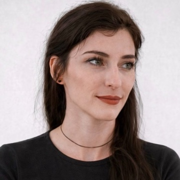
livia,I like problems
without obvious answers
Curious by nature and systematic by practice. I connect people, problems, and possibilities to create experiences that make sense.
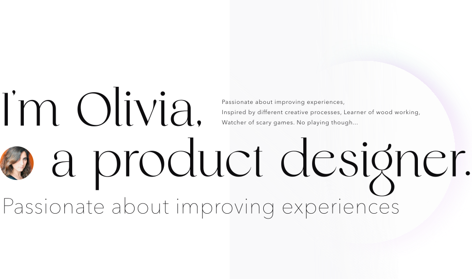
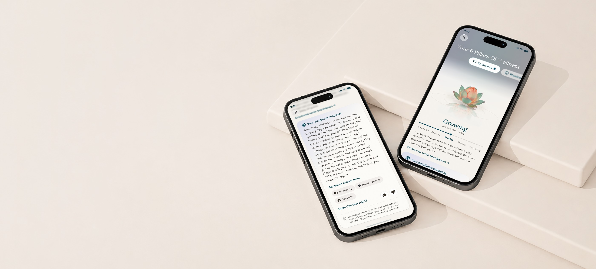
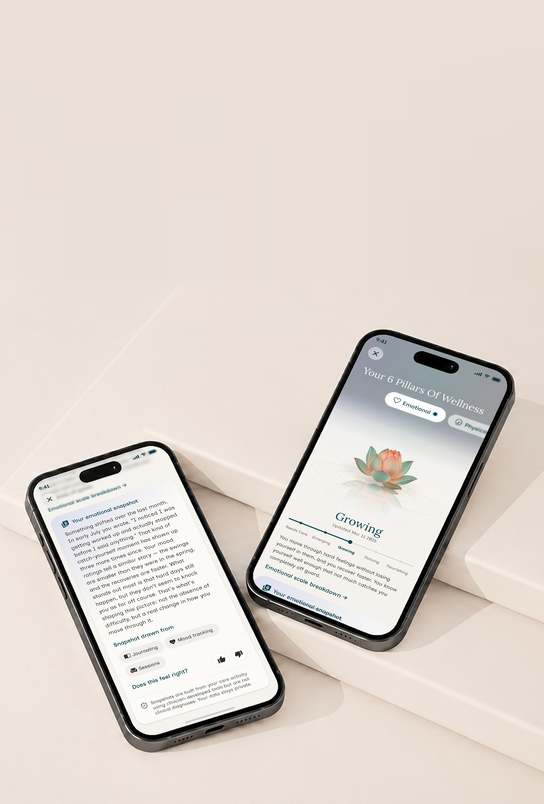
Giving a clinical wellness methodology a face, and a launch built to prove it.
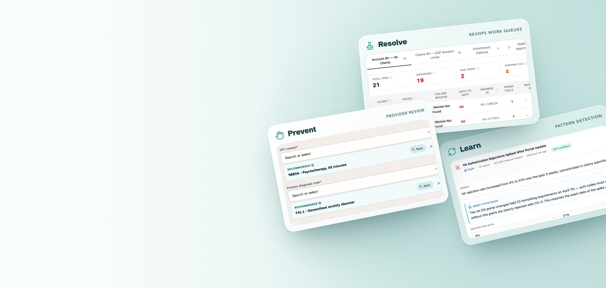
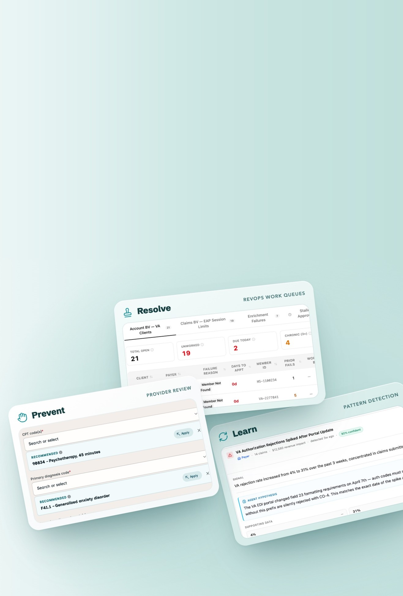
42,000 problematic claims. $100Ks in lost revenue. A system designed to stop the leak.
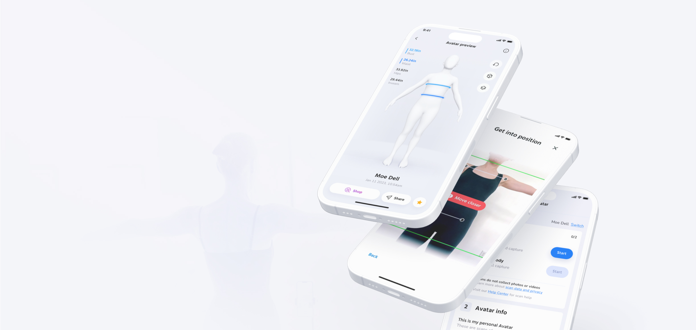
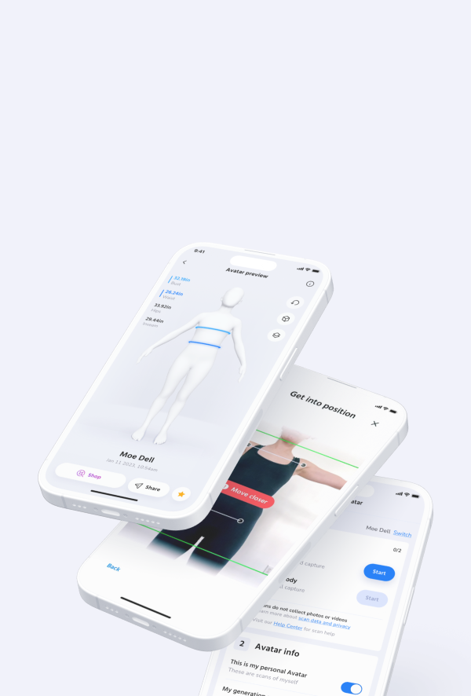
From a 50% to 96% scan success rate. A complicated 3D scan made effortless.
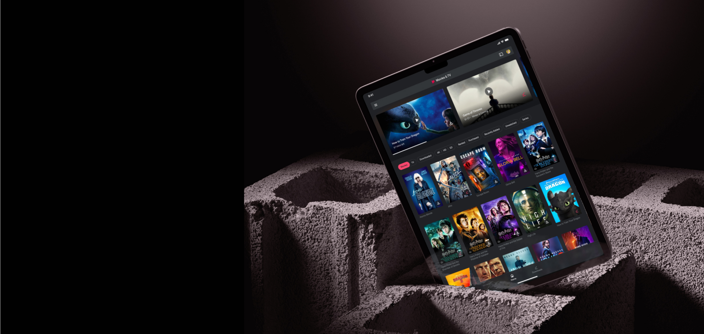
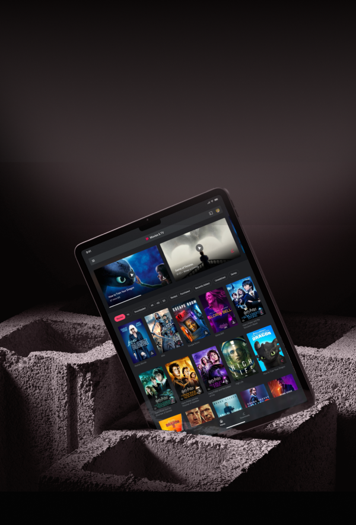
1% of users. 8% of all playback. Leading the iOS redesign around watching, not buying.
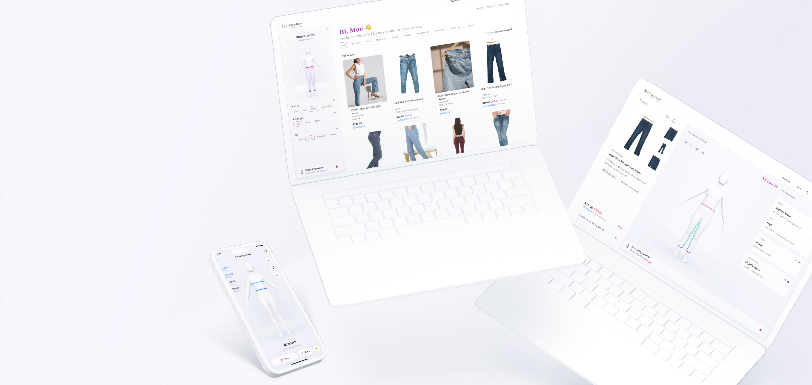
From idea to launch. A marketplace where clothes are found by your measurements, not your size.
View moreTurning a rough K-5 reading and fluency prototype into a polished demo, ready for an education summit in two months.
View more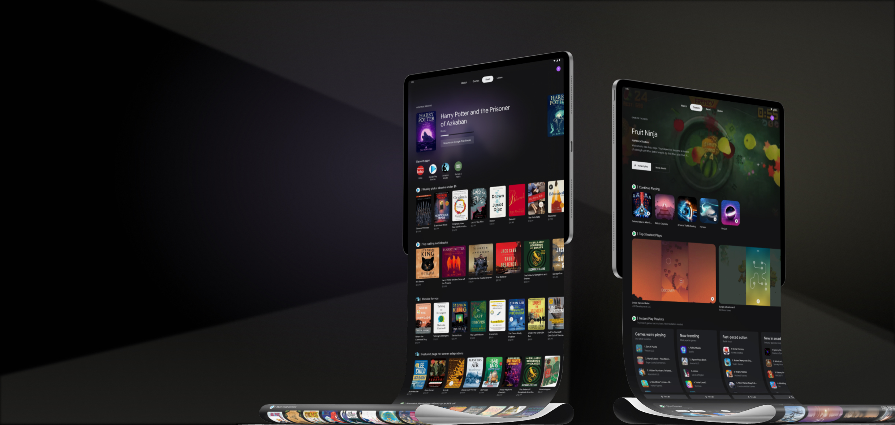
Contributing the reading & gaming action sets to a new Android OS tablet entertainment center
View moreElevating team communication with the liberating power of GIF expression
View more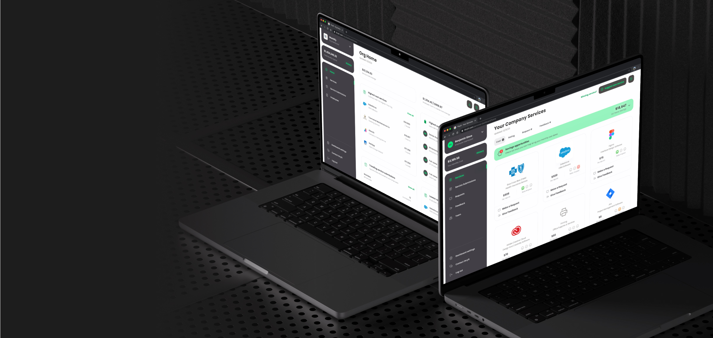
From a CEO’s first idea to a full product, built so procurement managers can put strategy over numbers.
🔒 NDA protected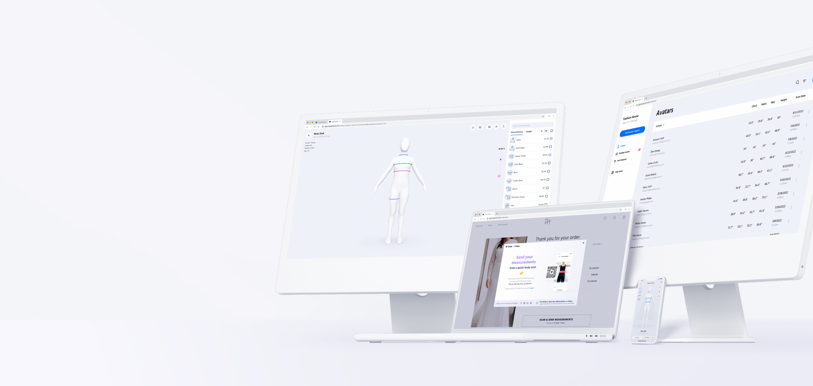
A measurement solution suite that empowers designers & tailors to up their productivity and precision
👷 Under construction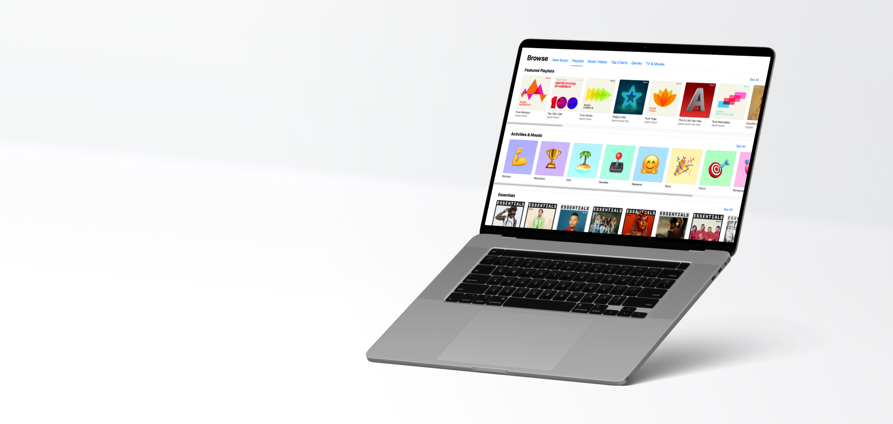
Upgrading internal tools to streamline the playlist art design & curation process
👷 Under construction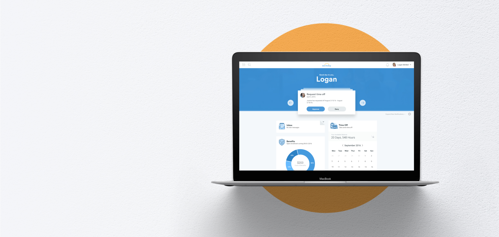
Designing a more human centered approach to a traditionally corporate product
👷 Under constructionOral reading & English fluency showcase demo for students K-5
Major Projects
• Milestone & delivery strategy
• Complete UI and partial UX redesign
• Wrong math answer templatization
• Character design and Illustration
• Character & element animations
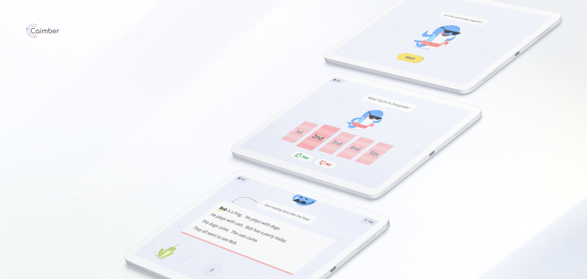
Oral reading & English fluency showcase demo for students K-5
Major Projects
• Milestone & delivery strategy
• Complete UI and partial UX redesign
• Wrong math answer templatization
• Character design and Illustration
• Character & element animations
Oral reading & English fluency showcase demo for students K-5
Major Projects
• Milestone & delivery strategy
• Complete UI and partial UX redesign
• Wrong math answer templatization
• Character design and Illustration
• Character & element animations